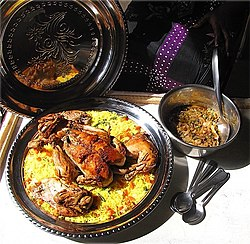

Home
Chicken Yassa

Description
Chicken Yassa is a tangy, spicy dish from Senegal and The Gambia made with marinated chicken, onions, and lemon. It's typically served with rice and packs a punch of flavor.
Ingredients
- 1 whole chicken, cut into pieces
- 3 onions, sliced
- Juice of 3 lemons
- 2 tablespoons mustard
- Salt and pepper
- Vegetable oil
Steps
- Marinate chicken in lemon juice, mustard, and spices overnight.
- Sauté onions until soft and golden.
- Brown chicken pieces in oil.
- Add onions and marinade to the pot and simmer.
- Cook until chicken is tender and sauce is thickened.